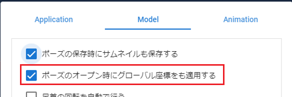
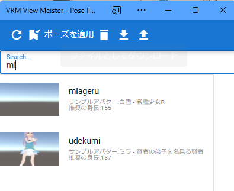
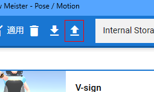

11.2. Open VRoid/VRM poses
The saved pose can be instantly reflected in any VRoid/VRM.
Click “Pose list” on the “3D model” tab.

A window with a list of poses will be displayed. Select the desired pose and click
Apply Pose.

Note
The model character at the time of saving is written as a sample avatar. In addition, the height is also indicated as reference information.
Confirm that the pose has been reflected.
The same pose can be applied to other characters with different heights and builds. (However, if there is an extreme difference from the original character, it may deviate.)
When saving a pose, the position data of the VRoid/VRM itself is also saved. To restore that position data, please check “Also apply global coordinates when opening a pose” in the “Model” tab of “App Settings”.
Warning
Even if it is a different character, it will be restored to the exact same position. If you load multiple characters, the positions will be duplicated, so please turn off the option if necessary.
In the case of poses that are extremely unbalanced, it may not be reflected in a single application (especially LowerLeg). In that case, apply it again and the pose will be perfectly reproduced.
Hint
Another way to reproduce the pose is to drag and drop the .vvmpose file saved on your PC onto the WebGL screen.
In the case of this method, it does not matter if it is not registered in the pose list. The target is limited to VRM, but you can immediately reproduce the pose by simply dragging it from Explorer etc.
11.2.1. Search pose
Incremental search is possible in the same way as other lists in this application.
11.2.2. Load pose file from disk
You can load the pose file saved on your PC’s disk into the app. Please push the upload button of the pose list.
When it finishes loading, it will be displayed in the list. (It doesn’t matter if there is no thumbnail)
Warning